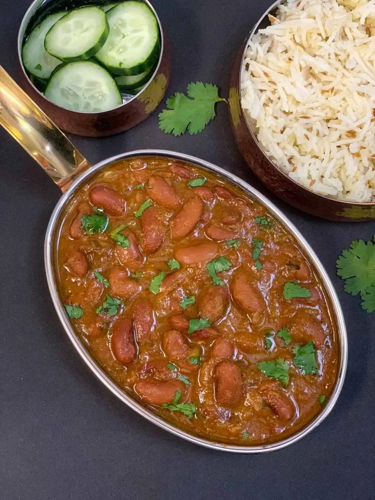

Rajma

Description
Rajma is a popular vegetarian dish from the Indian subcontinent,
consisting of red kidney beans in an onion-tomato-based thick gravy
with many aromatic Indian spices. It is usually served with rice.
Ingredients
- Kidney beans
- Oil
- Cumin seeds
- Bay leaf
- Onions
- Ginger
- Garlic
- Tomatoes
- Red chilli powder
- Turmeric powder
- Coriander powder
- Kasuri methi
- Cilantro
- Amchur powder/Lime juice
Steps
- Soak rajma for at least 4+ hours in hot water or overnight.
Then, drain the water and keep it aside.
- Press SAUTE mode on Instant Pot. Heat oil, add cumin seeds,
bay leaf, and let the cumin splutter.
- Next, add onions, ginger-garlic paste, and saute until onions
turn light brown for 3-4 minutes.
- Next, add finely chopped tomatoes (or tomato puree) and cook for
2-3 minutes.
- Then add the spices red chili powder, turmeric powder, coriander
powder, kidney beans, salt, and water. Stir well.
- Close the lid on the pot, and turn the pressure valve to the
SEALING position. Set the pot to "BEAN/CHILI" Mode and set the
timer to 30 minutes.
- Once the pot beeps, Do a NATURAL PRESSURE RELEASE (NPR).
- Lastly, remove the lid away from you, add garam masala powder,
kasuri methi, cilantro, and amchur powder or lime juice. Mix well.
Don't worry if the curry is too liquid consistency.
- Turn on SAUTE mode again and boil the curry for 5 minutes or until
you get the desired consistency. If you want thicker and creamy gravy,
you can mash a ladle full of rajma and add them back to the curry.
- Instant Pot Rajma Masala/Red Kidney Bean Curry recipe is ready, serve hot
with pooris, chapatis, roti & parathas.